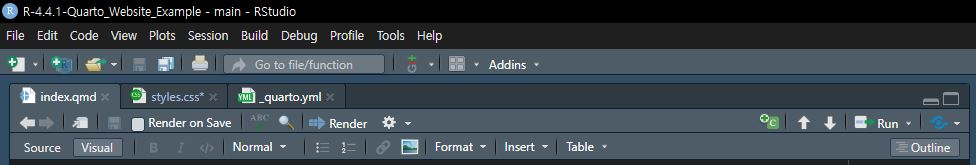

recommeded project name
R-4.4.1-Quarto_Website_ExampleRPythonStudyGroup feat. ChatGPT
2024년 10월 26일
2024년 10월 27일
1단계: Quarto_Website_Example R프로젝트 만들기
New Project... 메뉴 선택New Directory에 생성되도록 선택Quarto Website를 선택C:/Projects인지 확인 (=Global Options 사전 지정값)R-4.4.1-Quarto_Website_Example로 지정_quarto.yml: 전역옵션, 경로, 출력 등의 Quarto 전반의 설정 구성 파일about.qmd: 컨텐츠 파일로 웹페이지 전반에 대한 소개 역할index.qmd: 컨텐츠 파일로 웹페이지의 시작페이지 역할style.css: 스타일시트 파일로 웹페이지의 디자인을 담당2단계: .gitignore 파일 수정하기
3단계: Quarto_Website_Example 원격저장소 만들기
Quarto_Website_Example을 생성합니다.4단계: 원격저장소 연결하기
git remote add origin에서 origin은 원격 저장소의 이름(별칭)을 나타냅니다.5단계: index.qmd 파일구조 이해하기
---
title: "R-4.4.1-Quarto_Website_Example"
---
This is a Quarto website.
To learn more about Quarto websites visit <https://quarto.org/docs/websites>.
```{r}
1 + 1
```6단계: `_quarto.yml 기본설정 이해하기
7단계: style.css 파일내용 확인하기
8단계: 버전관리 첫번째 복원시점 설정하기
9단계: Render 해보기
Source Pane의 Render button을 클릭하여 진행해 봅니다.
Console Pane Background jobs tab
==> quarto preview index.qmd --to html --no-watch-inputs --no-browse
processing file: index.qmd
output file: index.knit.md
pandoc
to: html
output-file: index.html
standalone: true
title-prefix: R-4.4.1-Quarto_Website_Example
section-divs: true
html-math-method: mathjax
wrap: none
default-image-extension: png
css:
- styles.css
toc: true
metadata
document-css: false
link-citations: true
date-format: long
lang: en
editor: visual
theme: cosmo
title: R-4.4.1-Quarto_Website_Example
Output created: _site\index.html
Terminating existing preview server....DONE
Preparing to preview
Watching files for changes
Browse at http://localhost:7875/
GET: /quarto preview index.qmd --to html --no-watch-inputs --no-browse 메세지는 해당 명령줄이 실행되었음을 나타내며,
index.qmd: 파일이 대상임을 의미합니다.--to html: HTML 형식으로 출력함을 의미하며,--no-watch-inputs: 이 옵션을 사용하면 파일 변경을 실시간으로 감지하지 않고, 수동으로 업데이트함을 의미합니다.--no-browse` 미리보기 시 브라우저 창이 자동으로 열리지 않도록 합니다.processing file: index.qmd는 index.qmd 파일을 처리하고 있음을 나타내며,
output file: index.knit.md는 index.qmd 파일이 변환된 결과를 저장할 파일명을 나타냅니다. 하지만 Rendering이 완료되면 이 파일을 삭제되므로 실제로는 중간단계로만 사용됩니다.
pandoc to: html은 pandoc이 html로 변환하도록 지정되어 있음을 나타내며,
pandoc output-file: index.html은 변환된 파일의 이름을 나타냅니다.
pandoc standalone: true는 변환된 파일이 독립적인 HTML 파일로 생성되도록 지정되어 있으며,
title-prefix: R-4.4.1-Quarto_Website_Example은 변환된 HTML 파일의 제목을 나타냅니다.
section-divs: true는 변환된 HTML 파일에 섹션을 나타내는 div 태그를 추가하도록 지정되어 있으며,
html-math-method: mathjax는 수학식을 MathJax로 변환하도록 지정되어 있습니다.
wrap: none은 변환된 HTML 파일에 줄 바꿈을 추가하지 않도록 지정되어 있으며,
default-image-extension: png는 변환된 HTML 파일에 이미지를 PNG 형식으로 추가하도록 지정되어 있습니다.
- css: - styles.css는 변환된 HTML 파일에 CSS 스타일을 적용하도록 지정되어 있으며,
- toc: true는 변환된 HTML 파일에 toc(table of contents) 목차를 추가하도록 지정되어 있습니다.
metadata document-css: false는 style.css 파일을 사용하도록 되어 있으므로 개별문서에 css가 포함되지 않도록 되었다는 의미입니다.
metadata link-citations: true는 citation을 링크로 연결하도록 지정되어 있음을 나타냅니다.
metadata date-format: long는 날짜포맷을 긴 형식으로 지정되어 있음을 나타냅니다. 에를 들어서 27, october 2024와 같은 포맷을 사용합니다.
metadata lang: en는 언어가 지정되지 않았으므로 기본값인 영어로 지정되어 있음을 나타냅니다.
metadata editor: visual는 Visual Markdown Editor 가 사용하도록 지정되어 있었다는 의미입니다.
metadata theme: cosmo는 cosmo 테마를 사용하도록 지정되어 있음을 나타냅니다.
metadata title: R-4.4.1-Quarto_Website_Example는 제목이 프로젝트폴더명으로 지정되어 있음을 나타냅니다.
Output created: _site\index.html는 변환된 HTML 파일이 _site 폴더에 index.html 파일로 생성되었음을 나타냅니다.
Terminating existing preview server....DONE는 이전에 실행되었던 미리보기 서버를 중단하여 새로 렌더링된 파일이 보이도록 준비했다는 의미입니다. 이렇게 하면 이전 미리보기가 중단되고, 최신 렌더링 파일이 Viewer Pane에 표시됩니다.
Preparing to preview는 렌더링된 파일을 미리보기하기 위해 준비되었음을 나타냅니다.
Watching files for changes는 혼란스러운 표현이며, 아마도 아직 파일 변경을 감지하고 있음을 나타냅니다.
Browse at http://localhost:7875/는 렌더링된 파일을 미리보기하기 위한 주소를 나타냅니다. no-browse 옵션을 사용했으므로 브라우저가 자동으로 열리지 않습니다. 따라서 주소를 복사하여 웹브라우저에 붙여넣기하여 미리보기를 할 수 있습니다. 그러나 Output Pane의 Viewer tab에 미리보기가 보이므로 브라우저를 열어 보아야 할 경우는 별도 없습니다.
GET: /는 미리보기를 위해 서버에 요청을 보냈음을 나타냅니다.
Render에 의해 생성된 파일은 _site 폴더에 저장되며, 이 폴더는 .gitignore 파일에 포함되어 있어 git 버전관리에서 제외됩니다.
10단계: _quarto.yml 출력폴더 수정하기
output-dir: docs코드를 추가합니다._site 폴더가 아닌 docs 폴더에 변환된 파일이 저장됩니다.origin은 원격저장소의 별칭입니다.main은 로컬의 원격저장소 이름입니다. 그리고 위 명령으로 로컬의 main 브랜치에서 원격저장소 main 브랜치로 push합니다. `git log output
C:\Projects\R-4.4.1-Quarto_Website_Example>git push origin main
Enumerating objects: 8, done.
Counting objects: 100% (8/8), done.
Delta compression using up to 24 threads
Compressing objects: 100% (7/7), done.
Writing objects: 100% (8/8), 2.24 KiB | 763.00 KiB/s, done.
Total 8 (delta 0), reused 0 (delta 0), pack-reused 0 (from 0)
To https://github.com/RPythonMember/Quarto_Website_Example.git
* [new branch] main -> main
C:\Projects\R-4.4.1-Quarto_Website_Example>